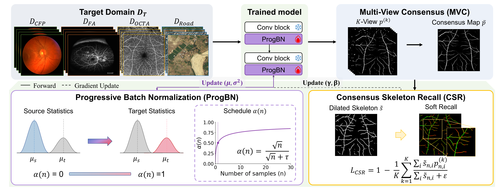
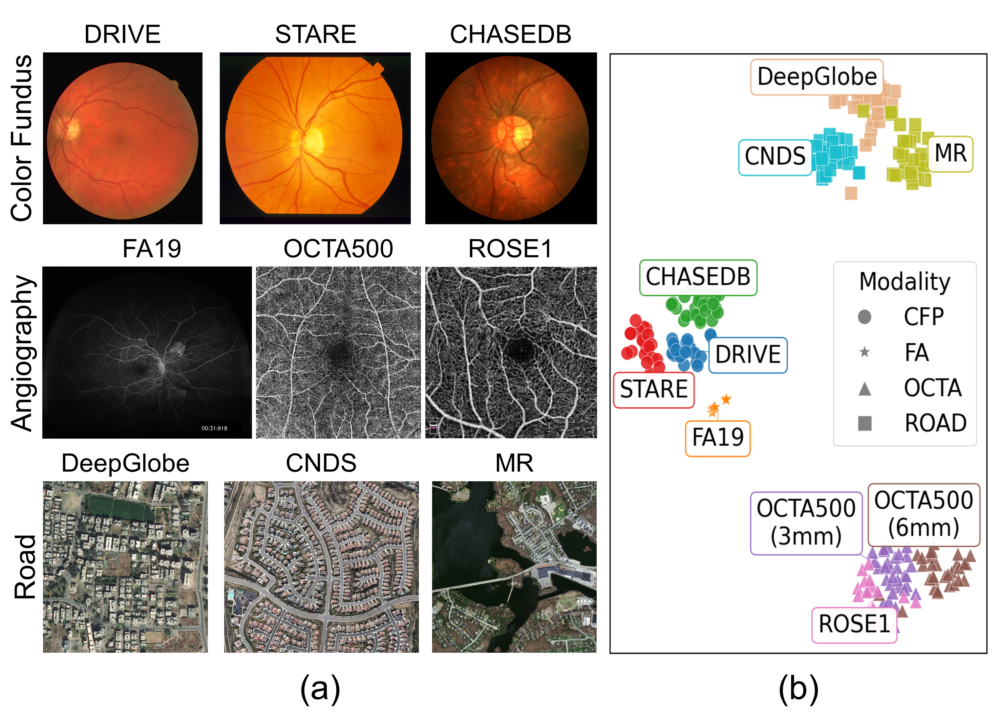
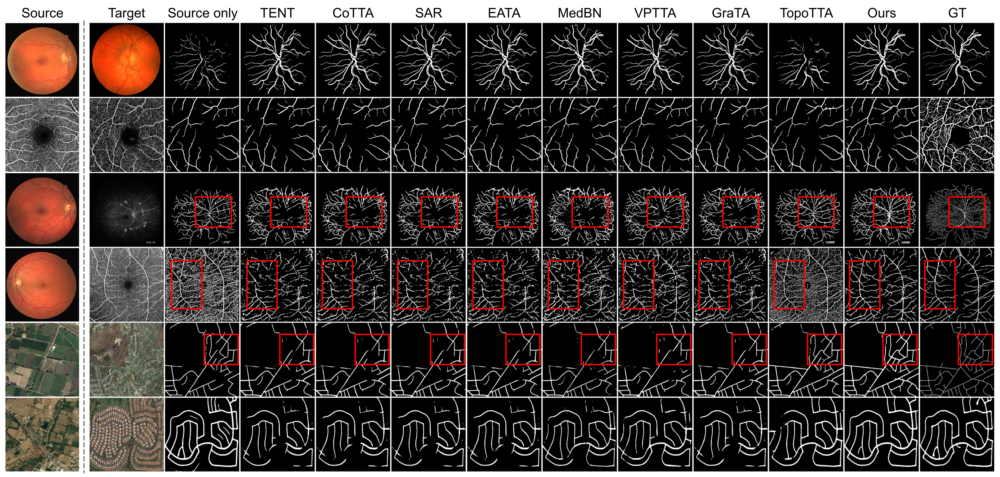
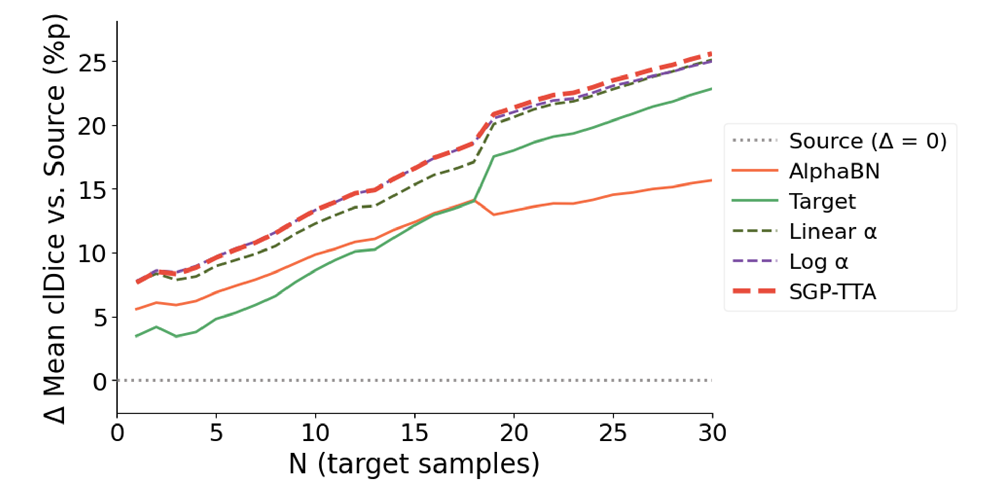
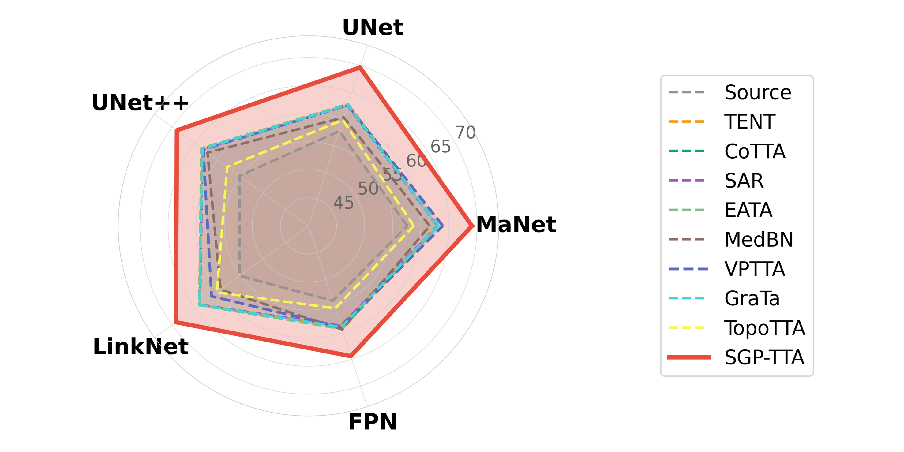
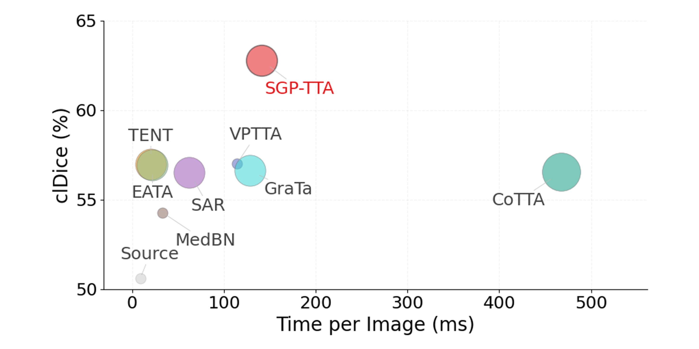

Overview of SGP-TTA. A source-trained network with frozen convolutions adapts only at its BN layers, through two complementary mechanisms. ProgBN blends frozen source and current target statistics under a sample-count schedule, without gradient updates; CSR recalls the skeleton of the multi-view consensus map and updates only the BN affine parameters.
Accurate segmentation of thin curvilinear structures is vital for various real-world applications, from vessel analysis to road extraction. Yet their intricate geometry makes even minor pixel-wise errors enough to break the global topology, and this structural fragility turns severe domain shifts into catastrophic failures. The difficulty is most acute under cross-modality gaps, where the imaging process itself differs fundamentally between source and target. While test-time adaptation (TTA) offers a practical source-free remedy, existing methods adapt feature statistics and confidence — neither of which constrains connectivity — and thus degrade under such extreme gaps. To address this, we propose Skeleton-Guided Progressive Test-Time Adaptation (SGP-TTA). Progressive Batch Normalization (ProgBN) shifts normalization from frozen source statistics toward current target estimates under a sample-count schedule, so that the source–target balance follows the stage of adaptation rather than a fixed coefficient. Consensus Skeleton Recall (CSR) then derives a structural target from geometrically aligned multi-view predictions and updates only the BN affine parameters to preserve connected structures. Extensive experiments show that SGP-TTA consistently outperforms existing TTA methods in topological connectivity, with the largest margins under cross-modality shift.

Representative curvilinear-structure datasets and their domain characteristics. (a) Color fundus photography (CFP), fluorescein angiography (FA), OCT angiography (OCTA), and aerial road datasets share the same underlying topology but differ sharply in appearance. (b) t-SNE of batch-normalization statistics; colors denote datasets, marker shapes denote imaging domains. Modality clusters are well separated — which is exactly why source-only models collapse under modality transfer.
The affine parameters of each BN layer remain calibrated to source-normalized features. Replacing the source statistics immediately therefore destabilizes early predictions, while a fixed source-heavy mixture becomes increasingly conservative after the affine parameters have adapted. ProgBN resolves this stage-dependent trade-off by progressively increasing its reliance on the target statistics as the stream proceeds.
$$\tilde\mu_n = \alpha(n)\,\mu_t(x_n) + \bigl(1-\alpha(n)\bigr)\,\mu_s, \quad \tilde\sigma^2_n = \alpha(n)\,\sigma^2_t(x_n) + \bigl(1-\alpha(n)\bigr)\,\sigma^2_s$$
where the mixing coefficient follows a bounded square-root schedule in the target-sample count n:
$$\alpha(n) = \frac{\sqrt{n}}{\sqrt{n} + \tau}$$
The schedule is monotonically increasing and label-free. The source statistics act as a prior worth τ units of adaptation progress, giving τ a concrete pseudo-count reading rather than an opaque tuning constant; the half-transition point is n = τ2.
ProgBN recalibrates feature statistics but does not constrain the spatial connectivity of thin structures. CSR derives a self-supervised structural target from prediction agreement across K geometric views (identity, two flips, three 90° rotations). After mapping each view's prediction back to the original coordinate frame, we form a Multi-View Consensus map $\bar p_n$, binarize it, skeletonize it, and dilate it into a tube $\tilde s_n$.
CSR then encourages each aligned view to cover the consensus-supported skeleton:
$$\mathcal{L}_{\text{CSR}} = 1 - \frac{1}{K}\sum_{k=1}^{K} \frac{\sum_i \tilde s_{n,i}\, p^{(k)}_{n,i}} {\sum_i \tilde s_{n,i} + \varepsilon}$$
Combined with a pixel-wise entropy term on $\bar p_n$, a single Adam step per image updates only the BN affine parameters ($\gamma, \beta$). All non-BN weights and the source running statistics stay frozen.

Qualitative comparison across diverse target domains. Red boxes highlight restored continuity of fine vessel structures and reduced false negatives in SGP-TTA (Ours) compared with the source model and competing TTA baselines.
Dice (%) and clDice (%) across three distribution-shift regimes. Higher is better. Best and second-best per column.
| Method | DRIVE → STARE | DRIVE → CHASEDB | OCTA3mm → ROSE1 | OCTA6mm → ROSE1 | ROSE1 → OCTA3mm | ROSE1 → OCTA6mm | ||||||
|---|---|---|---|---|---|---|---|---|---|---|---|---|
| Dice | clDice | Dice | clDice | Dice | clDice | Dice | clDice | Dice | clDice | Dice | clDice | |
| Source | 51.32 | 48.55 | 37.08 | 38.95 | 47.47 | 41.75 | 56.49 | 49.72 | 59.76 | 64.22 | 68.92 | 80.51 |
| TENT | 70.96 | 68.66 | 71.60 | 73.51 | 48.47 | 41.65 | 53.77 | 48.79 | 63.17 | 66.07 | 71.71 | 80.89 |
| CoTTA | 71.67 | 69.66 | 71.27 | 73.43 | 47.54 | 42.75 | 53.94 | 48.95 | 62.26 | 64.52 | 71.41 | 80.30 |
| SAR | 70.96 | 68.69 | 71.37 | 73.22 | 48.55 | 41.73 | 53.84 | 48.87 | 62.17 | 64.44 | 71.36 | 80.26 |
| EATA | 71.06 | 68.78 | 71.61 | 73.56 | 48.57 | 43.73 | 53.87 | 49.79 | 62.44 | 65.05 | 71.42 | 80.60 |
| MedBN | 70.26 | 68.15 | 70.13 | 71.33 | 50.19 | 43.89 | 56.54 | 51.81 | 49.86 | 50.83 | 61.76 | 71.54 |
| VPTTA | 70.92 | 68.03 | 71.33 | 73.47 | 49.23 | 42.75 | 56.05 | 51.06 | 54.43 | 55.75 | 67.97 | 78.44 |
| GraTa | 70.96 | 68.69 | 71.41 | 73.26 | 48.56 | 41.74 | 53.85 | 48.89 | 62.37 | 64.66 | 71.44 | 80.33 |
| TopoTTA | 71.98 | 70.66 | 71.70 | 76.12 | 49.44 | 43.35 | 55.15 | 48.57 | 62.18 | 65.55 | 65.76 | 79.23 |
| SGP-TTA (Ours) | 74.17 | 71.36 | 73.79 | 78.30 | 58.72 | 52.02 | 62.71 | 58.41 | 63.55 | 66.30 | 72.56 | 81.95 |
| Method | DRIVE → FA19 | DRIVE → OCTA3mm | DRIVE → OCTA6mm | DRIVE → ROSE1 | ||||
|---|---|---|---|---|---|---|---|---|
| Dice | clDice | Dice | clDice | Dice | clDice | Dice | clDice | |
| Source | 40.75 | 40.09 | 25.84 | 24.39 | 37.92 | 36.60 | 46.35 | 44.31 |
| TENT | 41.58 | 41.84 | 30.14 | 33.90 | 54.67 | 63.02 | 40.74 | 42.12 |
| CoTTA | 41.42 | 41.92 | 29.48 | 33.07 | 52.64 | 60.59 | 40.62 | 42.03 |
| SAR | 42.61 | 42.89 | 29.58 | 33.50 | 53.42 | 61.37 | 41.63 | 43.25 |
| EATA | 41.60 | 41.88 | 30.49 | 34.01 | 54.91 | 62.98 | 40.80 | 42.18 |
| MedBN | 39.97 | 41.18 | 27.08 | 29.60 | 48.62 | 54.90 | 41.86 | 43.00 |
| VPTTA | 44.79 | 45.08 | 32.50 | 33.91 | 55.13 | 59.38 | 44.30 | 44.90 |
| GraTa | 41.62 | 41.89 | 29.48 | 33.10 | 52.88 | 60.90 | 40.64 | 42.03 |
| TopoTTA | 43.85 | 44.01 | 24.18 | 23.33 | 35.51 | 35.36 | 46.68 | 47.04 |
| SGP-TTA (Ours) | 47.53 | 49.65 | 44.83 | 46.41 | 59.62 | 69.71 | 53.95 | 51.16 |
| Method | DeepGlobe → MR | DeepGlobe → CNDS | ||
|---|---|---|---|---|
| Dice | clDice | Dice | clDice | |
| Source | 37.23 | 44.94 | 85.56 | 93.39 |
| TENT | 37.18 | 46.05 | 62.67 | 77.06 |
| CoTTA | 37.35 | 46.32 | 62.91 | 77.20 |
| SAR | 37.35 | 46.30 | 62.94 | 77.22 |
| EATA | 37.26 | 46.28 | 63.11 | 77.41 |
| MedBN | 35.27 | 42.64 | 67.26 | 82.41 |
| VPTTA | 37.67 | 46.85 | 71.52 | 84.63 |
| GraTa | 37.40 | 46.38 | 63.00 | 77.30 |
| TopoTTA | 42.24 | 53.51 | 83.03 | 91.28 |
| SGP-TTA (Ours) | 40.80 | 54.84 | 85.27 | 94.30 |
SGP-TTA achieves the highest clDice in all 12 transfer settings and the highest Dice in 10 of 12. Gains are largest under cross-modality shifts (Table 2), where several existing TTA methods degrade below the source model.

No fixed source–target coefficient wins throughout the stream. Source-heavy normalization leads early; target-heavy normalization starts lowest and only overtakes later. The square-root schedule used by ProgBN gives the largest improvement at every point of the stream, directly supporting the stage-dependent view.
SGP-TTA is the outermost method on every axis of UNet, UNet++, MaNet, LinkNet, and FPN, averaged across all transfer settings. The method operates purely on BN layers, so the gain does not rest on a particular decoder design — and, by the same token, the claim is scoped to normalization-based networks.


SGP-TTA is slower than the entropy-driven baselines because it runs multiple views and a skeletonization step per image, but still sits well below the most expensive compared method (CoTTA) while attaining the highest clDice. Entropy-driven methods cluster near the same clDice regardless of whether they update only BN affine parameters or the whole network — the limit is the objective, not the compute.
@article{jang2026sgptta,
title = {Skeleton-Guided Progressive Test-Time Adaptation for Thin Curvilinear Structures},
author = {Jang, Boa and Lee, JunGyu and Lee, Gwanho and Choi, Jinwook and Kim, Young-Gon},
year = {2026},
note = {Under review}
}